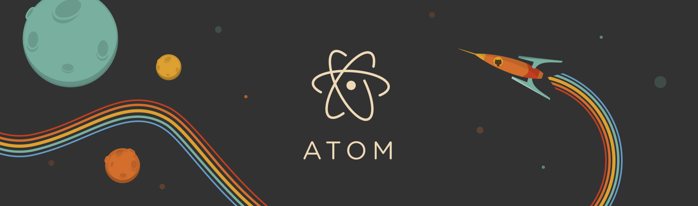

Atom-ng")
The original Atom.io site is Here.
Atom-ng: The hackable text editor. Community maintained fork of Atom with compiler optimizations.
- Updated Libraries
- Electron updated, and built from source with the compiler optimizations of Thorium.

Introducing Atom 1.0! : GitHub